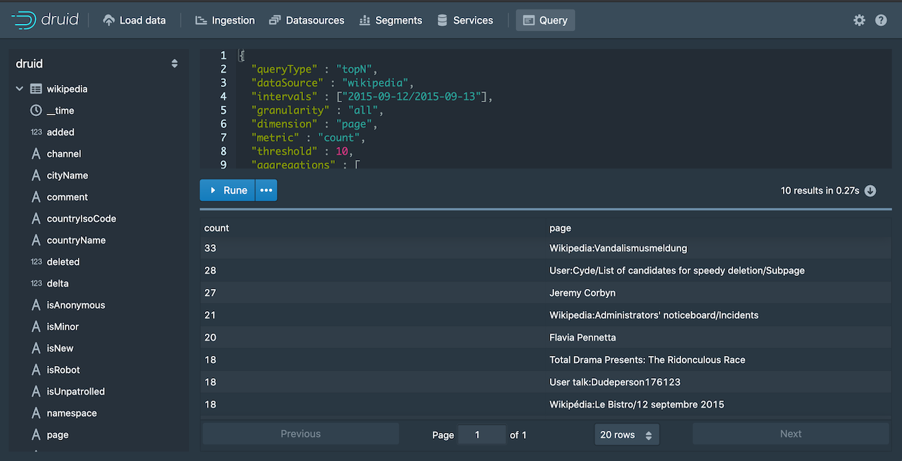

Apache Druid supports two query languages: Druid SQL and native queries. This document describes the native query language. For information about how Druid SQL chooses which native query types to use when it runs a SQL query, refer to the SQL documentation.
Native queries in Druid are JSON objects and are typically issued to the Broker or Router processes. Queries can be posted like this:
curl -X POST '<queryable_host>:<port>/druid/v2/?pretty' -H 'Content-Type:application/json' -H 'Accept:application/json' -d @<query_json_file>
Replace
<queryable_host>:<port>with the appropriate address and port for your system. For example, if running the quickstart configuration, replace<queryable_host>:<port>with localhost:8888.
You can also enter them directly in the Druid console's Query view. Simply pasting a native query into the console switches the editor into JSON mode.

Druid's native query language is JSON over HTTP, although many members of the community have contributed different client libraries in other languages to query Druid.
The Content-Type/Accept Headers can also take 'application/x-jackson-smile'.
curl -X POST '<queryable_host>:<port>/druid/v2/?pretty' -H 'Content-Type:application/json' -H 'Accept:application/x-jackson-smile' -d @<query_json_file>
If the Accept header is not provided, it defaults to the value of 'Content-Type' header.
Druid's native query is relatively low level, mapping closely to how computations are performed internally. Druid queries are designed to be lightweight and complete very quickly. This means that for more complex analysis, or to build more complex visualizations, multiple Druid queries may be required.
Even though queries are typically made to Brokers or Routers, they can also be accepted by Historical processes and by Peons (task JVMs)) that are running stream ingestion tasks. This may be valuable if you want to query results for specific segments that are served by specific processes.
1.1. Available queries
Druid has numerous query types for various use cases. Queries are composed of various JSON properties and Druid has different types of queries for different use cases. The documentation for the various query types describe all the JSON properties that can be set.
1.1.1. Aggregation queries
1.1.2. Metadata queries
1.1.3. Other queries
1.2. Which query type should I use?
For aggregation queries, if more than one would satisfy your needs, we generally recommend using Timeseries or TopN whenever possible, as they are specifically optimized for their use cases. If neither is a good fit, you should use the GroupBy query, which is the most flexible.
1.3. Query cancellation
Queries can be cancelled explicitly using their unique identifier. If the query identifier is set at the time of query, or is otherwise known, the following endpoint can be used on the Broker or Router to cancel the query.
DELETE /druid/v2/{queryId}
For example, if the query ID is abc123, the query can be cancelled as follows:
curl -X DELETE "http://host:port/druid/v2/abc123"
1.4. Query errors
1.4.1. Authentication and authorization failures
For secured Druid clusters, query requests respond with an HTTP 401 response code in case of an authentication failure. For authorization failures, an HTTP 403 response code is returned.
1.4.2. Query execution failures
If a query fails, Druid returns a response with an HTTP response code and a JSON object with the following structure:
{
"error" : "Query timeout",
"errorMessage" : "Timeout waiting for task.",
"errorClass" : "java.util.concurrent.TimeoutException",
"host" : "druid1.example.com:8083"
}
The fields in the response are:
| field | description |
|---|---|
| error | A well-defined error code (see below). |
| errorMessage | A free-form message with more information about the error. May be null. |
| errorClass | The class of the exception that caused this error. May be null. |
| host | The host on which this error occurred. May be null. |
Possible Druid error codes for the error field include:
| Error code | HTTP response code | description |
|---|---|---|
SQL parse failed |
400 | Only for SQL queries. The SQL query failed to parse. |
Plan validation failed |
400 | Only for SQL queries. The SQL query failed to validate. |
Resource limit exceeded |
400 | The query exceeded a configured resource limit (e.g. groupBy maxResults). |
Query capacity exceeded |
429 | The query failed to execute because of the lack of resources available at the time when the query was submitted. The resources could be any runtime resources such as query scheduler lane capacity, merge buffers, and so on. The error message should have more details about the failure. |
Unsupported operation |
501 | The query attempted to perform an unsupported operation. This may occur when using undocumented features or when using an incompletely implemented extension. |
Query timeout |
504 | The query timed out. |
Query interrupted |
500 | The query was interrupted, possibly due to JVM shutdown. |
Query cancelled |
500 | The query was cancelled through the query cancellation API. |
Truncated response context |
500 | An intermediate response context for the query exceeded the built-in limit of 7KB. The response context is an internal data structure that Druid servers use to share out-of-band information when sending query results to each other. It is serialized in an HTTP header with a maximum length of 7KB. This error occurs when an intermediate response context sent from a data server (like a Historical) to the Broker exceeds this limit. The response context is used for a variety of purposes, but the one most likely to generate a large context is sharing details about segments that move during a query. That means this error can potentially indicate that a very large number of segments moved in between the time a Broker issued a query and the time it was processed on Historicals. This should rarely, if ever, occur during normal operation. |
Unknown exception |
500 | Some other exception occurred. Check errorMessage and errorClass for details, although keep in mind that the contents of those fields are free-form and may change from release to release. |